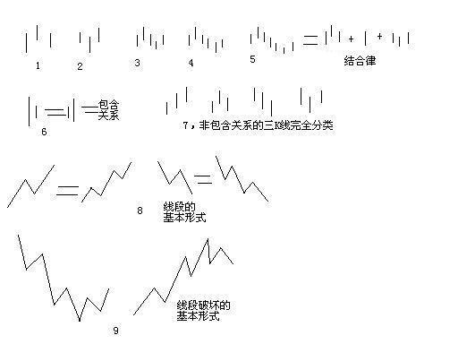
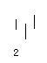

(2007-06-30 09:49:51)
在宾馆里闲着等着10点开始的腐败，半个小时，找个面首来面首有点时间紧张，还不如给各位写个主贴，来个课程，耗费一下各位周末腐败的时间。【韶山映山红】2007-06-30星期六。】
瞧了一下，有位叫石猴的网友写了帖子来解释什么是线段，他的理解还行，但不够严密。
其实，本ID的线段是可以最精确定义的，本ID的理论，本质上是一套几何理论，其有效性就如同几何一般，本ID理论当然有失败不严谨的时候，但这前提是几何的基础失败不严谨，不明白这一点，就不明白本ID的理论。【韶山映山红】什么失败不严谨？★可以做个专题，以后研究。】
这里，就把本来是后面的课程提前说说。【韶山映山红】“本来是后面的课程”，在缠师心里，笔线段的定义应该在什么后面呢？也许只是因为还没有完全成型，所以没有推出，所以我们现在依然能够看到笔、线段这样没有多义性分歧的规则的进化过程。★可以做个专题，以后研究。】
下面的定义与图，都适合任何周期的K线图。

【韶山映山红】上面这张图是缠师的原图。下面穿插的小图是这张图切割而来的。】
先看图中的第1、2，图中的小线段代表的是K线，这里不分阳线阴线，只看K线高低点。【韶山映山红】阳线阴线只代表价格波动过程中开盘收盘那些时间点的顺序，还有很多内在的波动顺序被K线隐含了，所以干脆不看顺序，只看结果，被隐含的经历也因为无足轻重而忽略。】
像图1这种，第二K线高点是相邻三K线高点中最高的，而低点也是相邻三K线低点中最高的，本ID给一个定义叫顶分型；【韶山映山红】这时候还要说“低点也是相邻三K线低点中最高的”，是因为还没有提出包含的概念。有了包含的概念之后，顶分型的低点就不用强调了，因为不可能不是最高的。】
【韶山映山红】缠师随手绘制的草图都能看出缠师内心的倾向。从图上可以看出，缠师内心里标准分型的K线是相互重叠的，其中隐含的动力学是：要想成为顶的结构，至少有3次连贯的向上攻击被打退的确认，夫战，勇气也。一鼓作气，再而衰，三而竭，彼竭我盈，故克之。这个确认思想是缠论的一个潜规则，分型如此，中枢亦如此。】
图2这种叫底分型，第二K线低点是相邻三K线低点中最低的，而高点也是相邻三K线高点中最低的。【韶山映山红】有了包含的概念之后，底分型的高点就不用强调了，因为不可能不是最低的。】
【韶山映山红】底分型和顶分型一样，都是明显的前低后高，从哪里来、到哪里去的内心活动一目了然。】

看不明白定义的，看图就明白了，这么直观都不明白，那去和孔男人为伍吧。【韶山映山红】看图直观，但是图难免有以偏概全的可能。根据定义画图不会错，根据图归纳定义就可能跑偏。】
顶分型的最高点叫该分型的顶，底分型的最低点叫该分型的底，由于顶分型的底和底分型的顶是没有意义的，所以顶分型的顶和底分型的底就可以简称为顶和低。也就是说，当我们以后说顶和底时，就分别是说顶分型的顶和底分型的底。【韶山映山红】也就是说，无论顶底分型，作为分型本身来说，前高后低和前低后高都不纳入分析。如果是连续的走势分析，高低的顺序就有意义了。】
两个相邻的顶和底之间构成一笔，所谓笔，就是顶和底之间的其他波动，都可以忽略不算，但注意，一定是相邻的顶和底，隔了几个就不是了。【韶山映山红】划重点：相邻的，顶底之间，之间的波动都可以忽略不算。】
【韶山映山红】笔的本质是顶底分型之间的波动可以忽略不算。为什么可以忽略不算？尤其是那些震荡的复杂笔。★可以做个专题，以后研究。】
【韶山映山红】从走势级别的角度来看，笔作为最低级别，有两种被忽略的高级别：不满足笔划分规则要求的大幅震荡波动；包含处理所隐含的长时间震荡延伸。★可以做个专题，以后研究。】
而所谓的线段，就是至少由三笔组成。【韶山映山红】这里没有给线段下定义，其实是在强调，一笔、两笔都不足以构成线段。至于如何构成，和中枢的概念一样，规则就复杂了。】
但这里有一个细微的地方要分清楚，因为结合律是必须遵守的，【韶山映山红】结合律是指运算的顺序不影响结果。交换律是指算子的顺序不影响结果。结合律：(a+b)+c=a+(b+c)，(a×b)×c=a×(b×c)。交换律：a+b=b+a，a×b=b×a。】像图3这种，顶和底之间必须共用一个K线，这就违反结合律了，所以这不算一笔，【韶山映山红】后面定义新笔概念的时候说：“顶分型与底分型经过包含处理后，不允许共用K线，也就是不能有一K线分别属于顶分型与底分型，这条件和原来是一样的，这一点绝对不能放松，因为这样，才能保证足够的能量力度；”顶底都需要三次确认，共用Ｋ线就违背了三次确认的动力学要求，所以干脆直接在形态学上做出限制。但是，其中的一次确认同时是反手有什么问题？线段规则就没有这种限制。★可以做个专题，以后研究。】
而图4，就光是顶和底了，中间没有其他K线，一般来说，也最好不算一笔，【韶山映山红】缠师在这里说得很委婉，“一般来说，也最好不算一笔，”。这时候虽然还没有提出包含的概念，但是从图上可以看出，定义的标准情况就是没有包含的情况。那么，从动力学的角度看，有没有自由K线的影响不是决定性的。】
而图5，是一笔的最基本的图形，顶和底之间还有一根K线。
在实际分析中，都必须要求顶和底之间都至少有一K线当成一笔的最基本要求。【韶山映山红】划重点：实际分析中，必须要求，自由K线。】
【韶山映山红】缠师在这里很坚决的要求自由K线，上面却单独画图说“最好不算”的情况，有什么原因？后来推出的新笔说了别的理由，那么这里的犹豫是什么呢？★★可以做个专题，以后研究。】
【韶山映山红】新笔老笔的共同点：包含处理后有独立的顶分型和底分型。新笔老笔的区别：老笔要求包含处理后顶和底之间至少有1根K线。新笔要求未做包含处理的顶和底之间至少有3根K线。】
【韶山映山红】完全没有包含关系的情况下，新笔老笔没有区别。也就是说，新笔的放宽要求，是针对有包含关系的情况，是考虑以时间换空间的影响？★可以做个专题，以后研究。】
【韶山映山红】若禅精舍（陈秋明）：
顶和底之间的其他波动都忽略不算。这并不意味着顶和底之间就没有波动，也不意味着这些波动都是一致的，而是在这种很小的范畴里面忽略。这和最低级别的定义有关系，而这个定义是主观选择的，例如按周线操作的系统，就不可能把最小级别定义在一分钟上，而应该至少在30分钟上。而一旦该系统将最小级别定义为30分钟，那么30分钟K线以下的细节就全部忽略了。
】
当然，实际图形里，有些复杂的关系会出现，就是相邻两K线可以出现如图6这种包含关系，也就是一K线的高低点全在另一K线的范围里，【韶山映山红】“范围”，所以也包括相等的情况。】
这种情况下，可以这样处理，在向上时，把两K线的最高点当高点，而两K线低点中的较高者当成低点，这样就把两K线合并成一新的K线；反之，当向下时，把两K线的最低点当低点，而两K线高点中的较低者当成高点，这样就把两K线合并成一新的K线。【韶山映山红】向上的向上收缩，让高的更高。向下的向下收缩，让低的更低。】
经过这样的处理，所有K线图都可以处理成没有包含关系的图形。【韶山映山红】“所有K线图都可以处理成没有包含关系的图形”，一方面，所有级别K线图都做包含处理；另一方面的意思是说，一次包含处理之后生成的新K线还需要继续做包含处理，一直到剩下的K线都没有包含关系为止。】
【韶山映山红】为什么k线要包含处理，其理论依据是什么？★
从包含处理的方法来揣测原理。
首先，要定义向上和向下，以便预设一个方向。这就意味着，包含处理是为了描述某一次的攻击行为做准备的。
以向上为例。两个K线，其中一个没有新高也没有新低，意味着相对来说，没有发生有效的攻击，也没有有效的回撤，处于胶着状态，对进攻的描述，就可以忽略她。这是包含处理的原因。
既然是描述向上进攻，每一次的突破都是成绩，所以高点的选择采用不断刷新记录的方式。
而低点，虽然可能后一个K线比前一个K线还低，但是，就像跟踪止损的方法一样，要及时动态的捕捉转折的可能，就要选择高高的跟随方式，否则就是人为的制造迟钝。】
【韶山映山红】包含处理的物理意义是什么？突然想到，就是处理盘整啊！两K线，高点更高、低点也更高的是向上趋势，高点更低、低点也更低的是向下趋势，高点更高、低点更低或者高点更低、低点更高的是盘整，包含处理掐死，剩下的就都是趋势了。】 2019/01/02 20:51
【韶山映山红】上面说的是左包右。如果是右包左，就不一样了。向上为例，左包右意味着没有什么实质性的动作，右包左有可能意味着已经有急剧的转折，会被包含处理掩盖，会带来一个K线的迟钝。好在包含方向的处理有助于下一个K线的识别。具体情况还要看阴包阳和阳包阴等组合。】
【韶山映山红】包含关系一直延伸，会不会级别越来越大了？★
会，也不会。
就像一字板，一天240个延伸，级别上没有变化。没有波动，也就是说没有进攻行为的K线才会一直延伸。在市场没有做出选择的时候，就是等待。所以一定要设定操作级别，来帮助面对小级别的茫然。
另一方面，小级别走势的不断延伸震荡，级别会变大。但是没有方向性的变化，无从下手，所以也只好等待。】
而图7，就给出了经过以上处理，没有包含关系的图形中，三相邻K线之间可能组合的一个完全分类，其中的二、四，就是分别是顶分型和底分型，一可以叫上升K线，三可以叫下降K线。【韶山映山红】“三相邻K线之间可能组合的一个完全分类”，意思是说，包含处理后任意相邻的3根K线都跑不出这四种形态，如果不是这样的，就是包含处理没有做完。】
【韶山映山红】如果不做包含处理，完全分类就不是这四种。包含处理使得完全分类成为可能，组合简单有序了。】
【韶山映山红】做包含处理，是这样的完全分类的前提。问题是，这样的完全分类有什么用？★可以做个专题。以后研究。】
【韶山映山红】顶分型和底分型被用来做笔、线段划分的依据，可是上升K线和下降K线并不是笔、线段划分的必须。那么，这两种带有方向性的Ｋ线组合意味着什么？】
【韶山映山红】上升K线和下降K线都是隐含在笔里面，没有独立的。为什么顶底分型必须满足结合律，是独立的？】
所以，上升的一笔，由结合律，就一定是底分型+上升K线+顶分型；下降的一笔，就是顶分型+下降K线+底分型。【韶山映山红】理想状态的笔就是这样的顺序Ｋ线的组合。换句话说，笔的本意就只有一个级别。】
注意，这里的上升、下降K线，不一定都是3根，可以无数根，只要一直保持这定义就可以。当然，简单的，也可以是1、2根，这只要不违反结合律和定义就可以。【韶山映山红】遇到复杂情况的时候，基本原则就是“只要不违反结合律和定义就可以”。结合律就是“顶分型与底分型经过包含处理后，不允许共用K线，顶和底之间至少有1根K线。”定义就是“两个相邻的顶和底之间构成一笔。”】
【韶山映山红】结合律是指运算的顺序不影响结果。交换律是指算子的顺序不影响结果。结合律：(a+b)+c=a+(b+c)，(a×b)×c=a×(b×c)。交换律：a+b=b+a，a×b=b×a。】
【韶山映山红】
笔的定义：1，由两个相邻的顶和底之间的走势构成。2，顶和底之间的其他波动，都可以忽略不算。
笔的限制：3，K线组合必须遵守结合律。4，老笔的顶底之间有自由K线，新笔的顶底之间不考虑包含有3根以上K线。】
【韶山映山红】若禅精舍（陈秋明）：
笔的组成部分，就是起点、终点、中间延续过程这三者。意味着一个多或者空的能量释放过程，显然，在一笔中，底分型的最低点一定要低于顶分型的最低点，而顶分型的最高点，一定要高于底分型的最高点。这种被释放的能量是有大小的，但在整个级别系统的最小组成元素上，这种大小的分别被忽略。
分型和笔的基本概念，原文已经非常清楚了，线段的基本形态和基本破坏形式也很清楚，线段的其他定义在后文中有详细阐述。从这一篇开始，逐渐严格的定义了笔和线段这两个走势类型的基本元素，在该层面，是不存在盘整的，笔和线段都只有上下的区别，这是在最小级别层面上，将多空能量的释放进行的理论定义。而这些最小级别的多空能量释放，将构成更大级别的走势类型。
线段是不可操作的，在线段系统中，线段被看成是没有内部结构的能量块，这是要注意的地方，笔就更不能操作了。但理解了笔和线段定义的本来，就可以在合适的K线图上，用这两者灵活的进行当下分解，这属于超脱理论之外的应用范畴，并不意味着可以作为一种通用的方法。
】
至于图8，就是线段的最基本形态，【韶山映山红】线段的最基本形态就是线段类盘整和线段类趋势。】

而图9，就是线段破坏，也就是两线段组合的其中一种形态。【韶山映山红】这里体现的是，线段破坏的基本形式是第一种情况的笔破坏的形态。或者说，是线段类趋势背驰后盘整的形态。】
有人可能要说，这怎么有点像波浪理论，这有什么奇怪的，本ID的理论可以严格地推论出波浪理论的所有结论，而且还可以指出他理论的所有不足，波浪理论和本ID的理论一点可比性都没有。
不仅是波浪理论，所有关于股市的理论，只要是关系到图形的，本ID的理论都可以严格推论，因为本ID的理论是关于走势图形最基础的理论，谁都逃不掉。【韶山映山红】缠论有了一定水平的时候，应该做这样的工作。★★★】
【韶山映山红】若禅精舍（陈秋明）：
根本区别在于：波浪理论属于经验的总结范畴，而缠论属于理论推演的范畴。前者具有概率性，后者具备必然性，这其实也是长期以来中西方文化中思维方式的根本区别。
太阳升起来，地上的雪开始融化，这是一种自然现象，但二者是否有必然的逻辑联系，是通过分子受热活动等理论推导出来的必然，否则人类无法确定太阳升起，和雪的融化，是否仅仅是同时发生的事情，二者的联系不能得到逻辑上的确认。该部分的哲学思想是休谟提出来的。
】
不能再废话了，下面车来了，腐败开始，大家也腐败去吧。
【网文】缠的分型
(2010-02-22 18:56:37)
第一节 分型的几何定义：
任何周期的股票走势图当中，分型可分为顶分型和底分型两种：
图中实体部分的最高与最低分别代表实际K线图中最高价与最低价。
所谓顶分型就是第二K线高点是相邻三K 线高点中最高的，而低点也是相邻三K线低点中最高的；
所谓底分型就是第二K 线低点是相邻三K 线低点中最低的，而高点也是相邻三K线高点中最低的。
顶分型的最高点叫该分型的顶，底分型的最低点叫该分型的底，由于顶分型的底和底分型的顶是没有意义 的，所以顶分型的顶和底分型的底就可以简称为顶和低。当我们以后说顶和底时，就分别是说顶分型的顶和底分型的底。
顶底分型左边两K线的最高与最低的区间称分型区间，顶分型区间的最低点称顶分型的下沿，底分型区间的最高点称底分型的上沿。
分型不是分形，分形理论，是数学的一个分支，有人用这分支的一些研究成果硬套到市场走势上，得出来的结论，没有太大意义。分型理论的逻辑，是直接来源于市 场走势本身，而不是一个先验的，市场之外的数学理论。至于这现实的市场逻辑显现出数学理论的结构，那是另一回事情。世界，本来就是数学的。但分型理论，不 是任何原有数学理论的应用，而是市场本身现实逻辑的直接显现，这是一个极为关键的区别。
第二节 K线模型的包含处理
在实际走势图中一K线的高低点全在另一K线的范围里，称为该K线被另一K线包含。那么在走势图中如何去处理这种的包含关系？首先要明白以下三个原则：
1、结合律原则 结合律原则是该理论中最基础的，任何走势图形中不能运用交换律原则来处理。简单的说，第1、2 根K 线是包含关系，第2、3 根也是包含关系，但并不意味着第1、3 根就有包含关系。
2、顺序原则 所谓顺序原则很简单，就是走势图中的K线在任何周期中形成都有时间先后。实际中先用第1、2 根K 线的包含关系确认新的K 线，然后用新的K 线去和第三根比，如果有包含关系，继续用包含关系的法则结合成新的K 线，如果没有，就按正常K 线去处理。
3、方向原则 假设，第n 根K线满足第n 根与第n+1 根的包含关系，而第n 根与第n-1 根不是包含关系，那么如果gn>=gn-1，那么称第n-1、n、n+1 根K 线是向上的；如果dn<=dn-1，那么称第n-1、n、n+1 根K线是向下的。
二、处理包含关系的法则
明白以上原则后，那么处理K线包含关系的法则：
走势图中，在向上时，把两K线的最高点当高点，而两K 线低点中的较高者当成低点，这样就把两K 线合并成一新的K线；
反之，当向下时，把两K 线的最低点当低点，而两K 线高点中的较低者当成高点，这样就把两K 线合并成一新的K线。经过这样的处理，所有K 线图都可以处理成没有包含关系的图形。
三、包含关系的几何意义
用[di,gi]记号第 i 根 K 线的最低和最高构成的区间。
当向上时，顺次 n 个包含关系的 K 线组，等价于[maxdi,maxgi] 的区间对应的 K 线，也就是说，这 n 个 K 线，和最低最高的区间为 [maxdi,maxgi] 的K线是一回事情；
向下时，顺次n 个包含关系的K 线组，等价于[mindi,mingi]的区间对应的 K 线。
第三节 分型结构的心理因素
一个顶分型之所以成立，是卖的分力最终战胜了买的分力，而其中，买的分力有三次的努力，而卖的分力，有三次的阻击。
用最标准的已经过包含处理的三K线模型：
第一根K线的高点，被卖分力阻击后，出现回落，这个回落，出现在第一根K线的上影部分或者第二根K线的下影部分。
而在第二根K线，出现一个更高的高点，但这个高点，显然与第一根K线的高点中出现的买的分力，一定在小级别上出现力度背驰，从而至少制造了第二根K线的上影部分。
最后，第三根K线，会再次继续一次买的分力的攻击，但这个攻击，完全被卖的分力击败，从而不能成为一个新高点，在小级别上，大致出现一种第二类卖点的走势。
由上可见，一个分型结构的出现，如同中枢，都是经过一个三次的反复心理较量过程，只是中枢用的是三个次级别。所谓一而再、再而三，三而竭，所以一个顶分型就这样出现了，而底分型的情况，反过来就是。
第四节 分型的强弱区分
首先，一个完全没有包含关系的分型结构，意味着市场双方都是直截了当，没有太多犹豫。包含关系（只要不是直接把阳线以长阴线吃掉）意味着一种犹豫，一种不确定的观望等，一般在小级别上，都会有中枢延伸、扩展之类的东西。
其次，还是用没有包含关系的顶分型为例子。如果第一K 线是一长阳线，而第二、三都是小阴、小阳，那么这个分型结构的意义就不大了，在小级别上，一定显现出小级别中枢上移后小级别新中枢的形成，一般来说，这种顶分型，成为真正顶的可能性很小，绝大多数都是中继的。例如，上海日线9 月17、18、19这三根K线组成的顶分型结构。
但，如果第二根 K 线是长上影甚至就是直接的长阴，而第三根K 线不能以阳线收在第二根 K 线区间的一半之上，那么该顶分型的力度就比较大，最终要延续成笔的可能性就极大了。例如上海日线6 月18、19、20、21，里面有一个包含关系，但这包含关系是直接把阳线以长阴线吃掉，是最坏的一种包含关系。
一般来说，非包含关系处理后的顶分型中，第三根K 线如果跌破第一根K 线的底而且不能高收到第一根K 线区间的一半之上，属于最弱的一种，也就是说这顶分型有着较强的杀伤力。例如上海日线5 月28、29、30。
【网文】分型强弱的分析法
(2010-09-28 21:29:52)
最近重学缠论股票，有一重要发现，即如何使形态学理论中的分型、笔、线段、中枢的构建统一起来。小可不才，试图在缠论定义基础上用自己的语言描述之。
这里先提出三个概念：K线分型、笔分型、线段分型。一一解释。
K线分型：即缠论分型，三根K线的顶或底的组合，以三K线之左右两K线作为分析元素；
笔分型：即特征序列分型中确认线段结束的一种分型，以线段中的反向笔作为分析元素；
线段分型：即确认中枢级别从而判断走势类型结束的一种分型，以走势中的反向线段作为分析元素。
以下分析的K线、笔、线段均作过非包含处理，成为标准形态。
三种分型均存在元素间的缺口问题，现逐一分析。
1）K线分型左右元素有缺口且g2<d1，最弱分型；如d2>g1则是最强分型；没有缺口则中规中距，唯一需要检验的是分型上、下沿的突破、站稳与否。
2）笔分型一、二元素有缺口，说明右线段第一笔没有破坏左线段第一元素高点，破坏力较弱，如果整个右线段还没破坏第一元素高点，则是最弱的；笔分型没有缺口，则说明元素的破坏力较强，如果第二元素一举破坏整个左线段，那是最强的。
3）线段分型相邻二元素有缺口，形成次级别趋势；二元素重叠，则形成本级别中枢；当两两重叠的二元素之间有缺口且与后一元素又存在缺口，形成本级别趋势，否则，要么封闭缺口而中枢扩展，要么当重叠元素达到五个，中枢也扩展。
线段分型在理论上可以绝对描述，但在实际走势中要复杂的多，只适合静态研究，不容易动态分析，这可能是缠师没有推广的原因吧。
每一级别走势类型，从K线分型到笔分型再到线段分型，是连贯而逐渐生长的，在这个角度下，可以忽略中枢、级别的概念，以元素间有无缺口分析走势强弱，当然，绝对高低点的把握还是需要以中枢为基础的区间套方法，而且这种分型分析法一般适合小级别周期图，毕竟大周期上等待的时间也太长了点。
【网文】学习1--分型（持续更新中）
(2010-12-04 21:59:21)
一、概念要点
所有的顶必须是顶分型的，反之，所有的底都是底分型的。也就是：没有顶分型，没有顶；反之，没有底分型，没有底。
二、分析理解
1、在实际操作中，如果在操作级别的K线图上，没有顶分型，那你就可以持有睡觉，等顶分型出来再说。
2、一个顶分型之所以成立，是卖的分力最终战胜了买的分力，而其中，买的分力有三次的努力，而卖的分力，有三次的阻击。用最标准的已经过包含处理的三K线模型：
第一根K线的高点，被卖分力阻击后，出现回落，这个回落，出现在第一根K线的上影部或者分第二根K线的下影部分；
而在第二根K线，出现一个更高的高点，但这个高点，显然与第一根K线的高点中出现的买的分力，一定在小级别上出现力度背驰，从而至少制造了第二根K线的上影部分。
最后，第三根K线， 会再次继续一次买的分力的攻击，但这个攻击，完全被卖的分力击败，从而不能成为一个新高点，在小级别上，大致出现一种第二类卖点的走势。
由上可见，一个分型结构的出现，如同走势中枢，都是经过一个三次的反复心理较量过程，只是走势中枢用的是三个次级别走势。所谓一而再、再而三，三而竭，一个顶分型就这样出现了。
而底分型情况，反之亦然。
用最标准的已经过包含处理的三K线模型：
一个完全没有包含关系的分型结构，意味着市场双方都是直截了当，没有太多犹豫。
包含关系（只要不是直接把阳线以长阴线吃掉）意味着一种犹豫，一种不确定的观望等，一般在小级别上，都会有中枢延伸、扩展之类的东西。
3、分型中三根K线的指导意义：
首先，一个完全没有包含关系的分型结构，意味着市场双方都是直截了当，没有太多犹豫。包含关系（只要不是直接把阳线以长阴线吃掉）意味着一种犹豫，一种不确定的观望等，一般在小级别上，都会有走势中枢延伸、扩展之类的东西。
其次，还是用没有包含关系的顶分型为例子。如果第一K线是一长阳线，而第二、三都是小阴、小阳，那么这个分型结构的意义就不大了，在小级别上，一定显现出小级别走势中枢上移后小级别新走势中枢的形成。一般来说，这种顶分型，成为真正顶的可能性很小，绝大多数都是中继的。
如果第二根K线是长上影甚至就是直接的长阴，而第三根K线不能以阳线收在第二根K线区间的一半之上，那么该顶分型的力度就比较大，最终要延续成笔的可能性就极大了。
再次，一般来说，非包含关系处理后的顶分型中，第三根K线如果跌破第一根K线的底而且不能高收到第一根K线区间的一半之上，属于最弱的一种，也就是说这顶分型有着较强的杀伤力。
4、分型形成后，无非两种结构：
一是成为中继型的，最终不延续成笔；
二是延续成笔。对于后一种，那是最理想的，
例如在日线上操作完，就等着相反的分型出来再操作了，中间可以去操作别的股票，这是效率最高的。而对于第一种情况，前面说过，可以看是否有效突破5周期的均线，例如对日线上的顶分型，是否有效跌破5日均线，就是一个判断顶分型类似走势的很好的操作依据。
其一，更精确简单的，就是这分型所对应的小级别走势中枢里，是否出现第三类买卖点，而且其后是否出现走势中枢移动。例如，对于一个顶分型，该顶分型成立后，对于该分型区间在小级别里一定形成某级别的走势中枢，选择其中最大一个，例如日顶分型后，可以找到相应的5、1分钟走势中枢，一般最大的就是5分钟 （30分钟没可能，因为时间不够）。如果该5分钟走势中枢或1分钟走势中枢出现第三类卖点，并该卖点不形成走势中枢扩张的情形，那么几乎100%可以肯定，一定在日线上要出现笔了。
其二，可以100%肯定的，要不出现笔并最终有效完成该顶分型，那一定要出现某级别的第三类买点，否则就算有短时间的新高，也一定是假突破。所以结合小级别的走势中枢判断，顶分型是否延伸为笔，是可以当下一目了然的。
如果你能有效地分辨中继分型，那么你的操作就会有大的进步。
5、一般来说，可以把分型与小级别走势类型结合操作
例如日线与5分钟的。如果一个小级别的走势中枢震荡没有生成日K线的顶分型结构，那么，这个走势中枢震荡就没必要走了。后者就算打短差也要控制好数量。因为，没有分型，就意味着走势没结束，随时新高，你急什么？而一旦顶分型成立，必然对应着小级别走势的第一、二类 卖点。其后，关键看新形成走势中枢的第三类买卖点的问题：一般情况下，如果是中继的，都是第三类卖点后形成走势中枢扩展，也就是有一个绝妙的盘整底背驰让你重新介入。这样，利用分型搞了一个美妙的短差，又不浪费其后的走势，这就是一个比较及格的操作了。
注意，利用分型，例如顶分型，卖了以后一定要注意是否要回补，如果一旦确认是中继的，应该回补，否则就等着笔完成再说。
但一定要注意，中继顶分型后，如果其后的走势在相应小级别出现背驰或盘整背驰，那么下一顶分型，是中继的可能性将大幅度减少。中继分型，有点类似刹车，一次不一定完全刹住，但第一刹车后如果车速已明显减慢，证明刹车系统是有效的，那么第二次 刹住的机会就极大了，除非你踩错，一脚到油门上去了。所以就可以比较两段之间的力度。
6、利用分型操作的难点在于：
一、必须与小级别的第二买卖点配合看，如果小级别看不明白，只看今天冲起来没破前一天高位或没跌破前一天低位，这样操作的效果不会太好。
二、要利用好盘整背驰，这样就不会漏掉回补，或者是非盘整背驰而回补早了，一般来说，非盘整背驰的，一定要等待背驰出现才可以回补。买点的情况反过来就是了。
注意，大级别的分型和某小级别的第一、二买卖点并不是绝对的对应关系，有前者一定有后者，但有后者并不一定有前者，所以前者只是一个辅助。
7、有人可能要问，如果看30分钟图，可能K线一直犬牙交错，找不到分型。这有什么奇怪的，在年线图里，找到分型的机会更小，可能十几年找不到一个也很正常，这还是显微镜倍数的比喻问题。确定显微镜的倍数，就按看到的K线用定义严格来，没有符合定义的，就是没有，就这么简单。如果希望能分析得更精确，那就提高显微镜的倍数，用小级别的图，例如，不要用30分钟图，用1分钟图，这样自然能分辨得更清楚。再次强调，用什么图与以什么级别操作没任何必然关系，用1分钟图，也可以找出年线级别的背驰，然后进行相应级别的操作。看1分钟图，并不意味着一定要玩超短线，把显微镜当成被显微的物了，肯定是脑子水太多了，这些细微的技术问题，都需要不断磨练才能操作自如，现在，最好多找些图来看，先感受一下，否则一点概念都没有，操作什么？
利用顶分型进行操作时，必须配合小级别的图。本质上，分型都是某小级别的第一、二买卖点成立后出现的。用卖点来说，如果第二卖点后次级别跌破后不形成盘整 背驰，那么调整的力度肯定大，如果时间一延长，就搞出笔来了，特别日线上的向下笔，都是比较长时间的较大调整形成的，那肯定是要有效破5日线的，而第二卖 点后次级别跌破形成盘整背驰，那调整最多就演化成更大级别的震荡，其力度就有限，一般5日线不会被有效跌破。
利用上面的性质，实质上并不需要在顶分型全部形成后再操作，例如000938，20070904那天，不需要等到收盘，而在在其冲高时，一看在前一天高位下形成小级别卖点，就可以坚决出掉，然后下来形成顶分型，等跌破5日线后，看是否出现小级别的盘整背驰，一旦出现，就回补，所以就有了9月5日的走势，这样，等于打了一个10%多的短差。
最后可以看一个综合的例子，600008：20070808日，顶分型后跌破5日线，然后调整到均线吻起来再启动。20070903日，顶分型后没有有效跌破5日线，然后继续上涨，第二天有一个盘整背驰的回补点。
注意，顶分型的时候是形成顶分型那天冲高卖，而不是收盘等顶分型都很明确了再走，例如在600008的20070903的例子里，只要当天不破20.9， 肯定就是顶分型，这不需要收盘才知道，没开盘都知道的。关键是结合小级别的走势，却当下确认这卖点。然后第二天的回补关键看5日线是否有效跌破，而判断的关键，其实不在5日线，而在小级别的是否盘整背驰上。
(2007-07-01 12:06:06)
本ID眼里揉不进沙子，汉奸配合美国人对中国的颠覆是全方位的，趁着午饭前的十分钟，必须写几句。
最近，有人开始有计划地去反思所谓土改的旧帐，说什么分地即全体犯罪、土改是忽悠农民造反、地主其实都是老好人，诸如此类。
任何人要摧毁一个国家，最简单就是从其历史下手，美国这面首的历史，从来都是最肮脏的，但谁在粉饰？
历史本来就是铁和血，用某种绝对的道德标准来摧毁历史，就是这些人的一贯伎俩。但历史从来不是道德的，历史无法摧毁，所有对历史的谈论、摧毁，都不过为了现实的利益服务。
新中国当然要砸破一切旧的法律，这有什么可说的？企图用旧中国法律来规定新中国的行为，无聊且可笑。
农民，把一切现存的当成天经地义的，就是要忽悠他们，告诉他们没有任何现存是天经地义的，一切生产关系，都是要被历史所打破的。
地主，被个体的消灭，无须什么矫柔造作的眼泪，历史就是这样，历史就是铁和血。
被忽悠的，都是能被忽悠的。
历史的真理就是：被忽悠的都是能被忽悠的。谁有本事，现在忽悠大家重新回到原始社会吧，看能还是不能？
历史的另一条真理就是：对待忽悠，可以用忽悠对待，也可以用枪杆子对待，而且历史最终都在证明着，不懂得枪杆子，放弃枪杆子的，不是别有用心，就是天字一号的大傻蛋。【韶山映山红】建党之初，中国共产党把主要精力放在宣传“主义”和组织工人上。在党看来，这是由无产阶级先锋队的本质决定的，是自然而然的事情。正因如此，对有人热衷于搞枪杆子的做法，党曾经一度持批判态度。1927年春天以后，随着蒋介石叛变革命，南京和武汉国民政府相继“清党”和“分共”，革命形势跌入谷底。1927年8月7日，中共中央在武汉召开紧急会议，也就是在这次会议上，毛泽东提出了“枪杆子里面出政权”的思想，由此成为指导中国革命几十年的响亮口号。】
好了，十分钟快到了，先下，再见。【韶山映山红】缠师打字速度还是很快的。】
本课目录
教你炒股票62：分型、笔与线段【网文】缠的分型【网文】分型强弱的分析法【网文】学习1--分型（持续更新中）必须和企图捣毁共和国基础的舆论进行坚决斗争